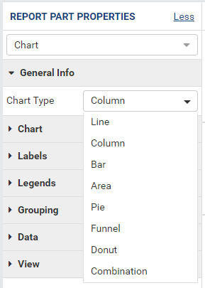
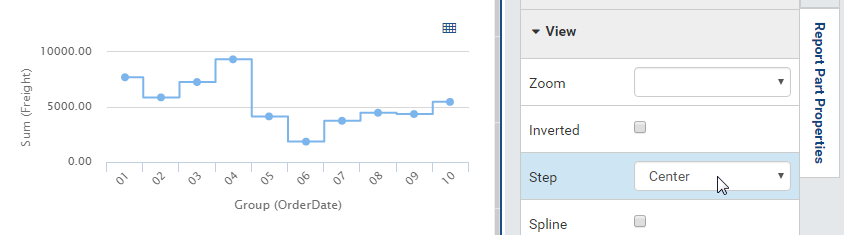

Report Designer/Chart¶
Chart is a built-in type of report part that displays data using graphical symbols, such as bars in a bar chart, lines in a line chart, or slices in a pie chart.
Configure Report Part Properties for Chart¶
- 
Fig. 241 Report Designer - Chart Properties
Select the chart in Report Body (See Manage Report Parts for how to add a chart).
Click the expand icon (<) on the right to open the Properties boxes if needed.
Select the vertical Report Part Properties box.
The properties are listed in Report Part Properties box in 7 sections. (Fig. 241)
- General Info
- Chart
- Labels
- Legends
- Grouping
- Data
- View
{kind=link}
User can configure the properties and see changes reflected in Preview pane:
Select a type in Chart Type drop-down. (See below for each type)
Configure border settings:
In Chart group, click the gear icon (⚙) to open Border Settings pop-up.
Choose the border to be visible or not.
Select a border color.
Select the border thickness (in pixels).
Click OK to close the Border Settings pop-up.
Set the background color.
In Chart group, click the gear icon (⚙) to open Chart Background Color Settings pop-up.
Select a background color.
Choose to apply the color to the entire chart (the area inside the border above) or to the plot area only (on the right).
Click OK to close the Chart Background Color Settings pop-up.
Configure the X-axis and Y-axis (applicable to the chart types Line, Column, Bar, Area, and Combination only).
Customize the title (“Month” instead of “Group (OrderDate)” and “Freight” instead of “Sum(Freight)”).
Set the title font face and font size.
Choose title text effects bold, italic and underlined.
Choose title text color and background color.
Choose title text alignment.
Customize the starting value for the chart. In the sample screenshot, “3000” is entered into the Starting Point box of Y-axis, so only the points having Sum(Freight) value greater than or equal to 3000 are displayed.
Customize the relative distance between the tick marks. In the sample screenshot, “10000” is entered into the Intervals box of Y-axis, so there will be exactly one tick mark after every 1000 units on Y-axis (4000.00, 5000.00, 6000.00, 7000.00, etc).
Configure the grid lines.
Choose the grid lines to be visible or not.
Select a line color.
Select a line pattern: Solid (default), Dot or Dash.
Select the line thickness (in pixels).
Configure color theme. This option is available from version 2.9.0.
In Chart group, click the gear icon (⚙) next to the Color Theme option to open Color Theme Selection pop-up.
Select a color theme and click OK to the pop-up.
Notes:
When the System Admin changes the Default Color Setting, all report parts using the default color theme will change to use the new default theme.
Configure multiple colors. This option is available from version 2.9.0.
In Chart group, select Multi-Color checkbox.
Then the chart will receive one color per point.
Notes:
- Multi-Color option is only available for single metric charts. When using multiple metrics each metric is a different color.
- Sparkline chart type does not support Multi-Color option.
- Multi-Color option is available for Bubble and Scatter from version 2.10.0.
Fig. 247 Chart - Multiple Color Column Chart
Configure the text direction for the labels.
Configure the legends.
Select to use Separator.
Tick Use Separator check-box in Grouping in Report Part Properties to see Separators box inside the chart configuration.
Add [ShipRegion] and [ShipCity] to Labels (X-axis) box, they will show up as Group(ShipRegion) and Group(ShipCity).
Add [OrderID] to Values (Y-axis) box, then choose Count as the Function, it should show up as Count(OrderID).
Add [ShipCountry] to Separators box, it will show up as Group(ShipCountry).
Bottom X% Grouped to Other is used to set the threshold where percentage values lower than that will be grouped together into Others group. See examples below:
Before: and After setting 60%:
Choose to display values of data points or not.
Add threshold lines to the chart.
- In Data group, click the gear icon (⚙) to open Thresholds Settings pop-up.
- In Y-axis, click Add Setting.
- Specify the threshold type: Static or Dynamic. Dynamic thresholds option is available from version 2.11.0.
- Specify the Field that the threshold belongs to.
- Input Label for the threshold. The text format for the static threshold’s label can be customized by clicking the gear icon (⚙)
- Input a value for static threshold or add a field then choose a function for
- For Static threshold, input a number in Value textbox. For Dynamic threshold click “Add a field” then choose a field with its function and specify the format to draw threshold line.
- Configure Dashstyle, Color and Thickness.
- Remember to tick the Visible textbox.
- Click OK to close the Thersholds Settings pop-up.
Add regression line (applicable to the chart types Line, Column, Bar, Area, Combination, Scatter, and Bubble only). New in 2.12.0.
- In Data group, click the gear icon (⚙) to open Regression Line Settings pop-up.
- Select a field to apply the regression line.
- Specify whether to display this regression line in the chart plot area or not.
- Specify whether to hide this regression line in the chart legend or not.
- Input the name for the regression line. If the name is not defined, the equation will display as the regression line’s name. This name is only shown in the tool tip and the legend, it is not displayed in the chart on the line.
- Select one of the types from Linear, Polynomial, Logarithmic, or Exponential in Regression Type dropdown.
- Input the decimal places for the regression line.
- Choose the Order number if the regression line is Polynomial.
- Configure the color, dashstyle, and thickness.
- Input the extrapolate number if the regression type is Linear or Polynomial.
- Click OK to close the Regression Line Settings pop-up.
-
Zoom into a region of the chart.
- In View group, select the axis to be maginified:
- XY: both axis will be magnified.
- X: X-axis will be magnified while Y-axis remains fixed.
- Y: Y-axis will be magnified while X-axis remains fixed.
- Hold the mouse button and drag over a region, then release the mouse button to actually zoom into that region. (Fig. 257)
- Repeat to zoom closer.
- Click the Reset zoom button to restore the chart to normal.
- In View group, select the axis to be maginified:
Invert the X-axis and Y-axis by ticking the Inverted check-box in View group.
Choose a step chart style.
Fig. 258 Chart - Center Step
Choose a spline chart style.

Fig. 260 Report Designer - Data Refresh Interval
Configure how often data is refreshed when report is being viewed.
- Click the gear icon (⚙) to open Data Refresh Interval Settings pop-up.
- Choose to have data refreshed automatically or manually.
- Enter an interval between each refresh (in seconds).
- Choose to view all data or enter a number to view that specific
number of latest records only.
-
Choose Single Y-axis to show all metrics in one Y-axis. This option is only available for combination charts that contain at least two metrics. New in version 2.12.0.
When Single Y-axis is selected, the All axis will be applied and the same format with the first metric’s axis.
The metrics in the combination chart are stacked in the order they are added in the configuration, the first metric added is the on the bottom and the last metric added is on the top. In the example image above, the area chart metric is on top and is the last metric in the chart set up.
{kind=link}
{kind=link}
{kind=link}
{kind=link}
{kind=link}
{kind=link}
{kind=link}
{kind=link}
{kind=link}
{kind=link}
{kind=link}
{kind=link}
{kind=link}
{kind=link}
{kind=link}
{kind=link}
{kind=link}
{kind=link}
Note
If the Show Preview section in Configuration Mode checkbox (In Others tab in Advanced Settings) is unticked then The Preview section will not be displayed for following pop-ups:
{kind=link}
Please see Update Others Settings for more details.
Line Chart¶
A line chart displays data as a series of data points ordered by value and connected by lines. Therefore the line chart is used to visualize a trend in data over intervals of time.
{kind=link}
For example, table Orders in Northwind database stores the OrderDate together with the Freight cost of each order. From that data, a report such as the trend of total Freight cost over each month would be best visualized using a line chart.
- “Each month” means using “Month” format for OrderDate field to get the month numeric value, then using the Group function to group data with the same month numeric value together.
- Then “total Freight cost over each month” means applying the Sum
function for Freight value within each month group.
To configure the report like above:
- Select “Line” as the Chart Type in General Info group, two boxes will appear in Configuration section: “Labels (X-axis)” and “Values (Y-axis)”.
- Add the field OrderDate into Labels box (drag the field from Middle Panel or use the Add icon +).
- The field will be given the alias “Group(OrderDate)”.
- Select the field in Labels box to open the Field Properties box.
- Check to confirm that in Data Formatting group, “Group” is selected for the Function and “Month” is selected for the Format.
- Add the field Freight into Values box (drag the field from Middle Panel or use the Add icon +).
- The field will be given the alias “Sum(Freight)”.
- Select the field in Values box to open the Field Properties box.
- Check to confirm that in Data Formatting group, “Sum” is selected for the Function.
Bar Chart and Column Chart¶
A bar chart displays groups of data as rectangular bars with lengths proportional to the values that they represent. Therefore the bar chart is used to show comparisons among different groups.
The column chart is the same as the bar chart, except for being displayed vertically.
{kind=link}
For example, table Suppliers in Northwind database stores the list of suppliers specified by SupplierID together with the Country. From that data, a report such as comparing the number of suppliers per country would be best visualized using a column chart.
- “Per country” means using the Group function to group data with the same country text value together.
- Then “the number of suppliers per country” means applying the Count
function for SupplierID value within each country group.
To configure the report like above:
- Select “Column” as the Chart Type in General Info group, two boxes will appear in Configuration section: “Labels (X-axis)” and “Values (Y-axis)”.
- Add the field Country into Labels box (drag the field from Middle Panel or use the Add icon +).
- The field will be given the alias “Group(Country)”.
- Select the field in Labels box to open the Field Properties box.
- Check to confirm that in Data Formatting group, “Group” is selected for the Function.
- Add the field SupplierID into Values box (drag the field from Middle Panel or use the Add icon +).
- The field will be given the alias “Count(SupplierID)”.
- Select the field in Values box to open the Field Properties box.
- Check to confirm that in Data Formatting group, “Count” is selected for the Function.
Area Chart¶
An area chart displays graphically quantitative data. It is based on the Line Chart. The area between axis and line are commonly emphasized with colors, textures and hatchings. Commonly one compares with an area chart two or more quantities.
For example, this area chart compares the amount of Product units in stock versus the amount on order.
{kind=link}
Another example with Range Only option.
{kind=link}
Pie Chart¶
A pie chart displays data in a circle, divided into slices to illustrate numerical proportion.
{kind=link}
For example, a pie chart
will compare proportions of the freight cost among different countries.

Fig. 268 Pie Chart Freight by City in France
This pie chart also
drills down data to freight cost among different cities in a selected
country.
To configure the report like that:
- Select “Pie” as the Chart Type in General Info group, two boxes will appear in Configuration section: “Labels (X-axis)” and “Values (Y-axis)”.
- Add the field ShipCountry into Labels box (drag the field from Middle Panel or use the Add icon +).
- The field will be given the alias “Group(ShipCountry)” (Group function is used as expected).
- Add the field ShipCity into Labels box (drag the field from Middle Panel or use the Add icon +).
- The field will be given the alias “Group(ShipCity)” (Group function is used as expected).
- Add the field Freight into Values box (drag the field from Middle Panel or use the Add icon +).
- The field will be given the alias “Sum(Freight)” (Sum function is used as expected).
Funnel Chart¶
A funnel chart displays values as progressively decreasing proportions. Ideally the funnel chart shows a process that starts at 100% and ends with a lower percentage where it is noticeable in what stages the fall out happens and at what rate - the funnel chart illustrates where the biggest bottlenecks are in the process.
Data like this sales pipeline data is best displayed using the funnel chart:
{kind=link}
| Stage | Amount |
| Prospects | 500 |
| Qualified prospects | 400 |
| Needs analysis | 200 |
| Price quotes | 150 |
| Negotiations | 100 |
| Closed sales | 50 |
Donut Chart¶
Donut Chart displays data in a ring, divided into slices to illustrate numerical proportion.
See also: Pie Chart
Combination Chart¶
A combination chart allows combining multiple charts of different types together in the same report part.
Comparison between Sales with and without Discount
Relationship between ServiceTime and Sales
{kind=link}
{kind=link}
| Id | ServiceTime | Sales |
| 1 | 150 | 200 |
| 2 | 80 | 930 |
| 3 | 30 | 1370 |
| 4 | 10 | 1504 |
Area type is available in Combination chart from version 2.12.0.
{kind=link}
Tree Map Chart¶
Tree Map displays data as a set of rectangles. It is good for comparing proportions and spotting patterns. It can also display a large amount of items on the screen simultaneously.
A Tree Map comparing Products by their Units in Stock.
{kind=link}
To configure the report like that:
- Select “Tree Map” as the Chart Type in General Info group, two boxes will appear in Configuration section: “Labels (X-axis)” and “Values (Y-axis)”.
- Add the field ProductName into Labels box (drag the field from Middle Panel or use the Add icon +).
- The field will be given the alias “Group(ProductName)” (Group function is used as expected).
- Add the field UnitsInStock into Values box (drag the field from Middle Panel or use the Add icon +).
- The field will be given the alias “Sum(UnitsInStock)” (Sum function is used as expected).
- Click the Report Part’s header to open Report Part Properties panel again.
- In Data group, tick Show Value Labels and Show Slice Labels.
Heat Map Chart¶
Heat Map displays values in a matrix, with larger values represented by darker colors.
A Heat Map comparing Freights by Year and Country.
{kind=link}
To configure the report like that:
- Select “Heat Map” as the Chart Type in General Info group, three boxes will appear in Configuration section: “Labels (X-axis)”, “Values (Y-axis)” and “Value Label”.
- Add the field OrderDate into Labels box (drag the field from Middle Panel or use the Add icon +).
- The field will be given the alias “Group(OrderDate)”, Group as Function and Year as Format in Field Properties.
- Add the field ShipCountry into Values box (drag the field from Middle Panel or use the Add icon +).
- The field will be given the alias “Group(ShipCountry)” (Group function is used as expected).
- Add the field Freight into Values box (drag the field from Middle Panel or use the Add icon +).
- The field will be given the alias “Sum(Freight)” (Sum function is used as expected).
- Click the Report Part’s header to open Report Part Properties panel again.
- Click the gear icon next to Settings in Legends group to open Legend Settings pop-up.
- Tick Visible check-box to show the legend.
- Click OK to close the pop-up.
- In Data group, tick Show Value Labels.
Scatter Chart¶
A scatter chart displays data as data points, at the intersection of an x and a y numerical value. For a scatter chart, both horizontal and vertical axis are value axis, there is no category axis like the line chart.
{kind=link}
Above is a sample Scatter Chart Showing Number of Orders and Total Freight by Country.
- The countries that appear further on the right have more orders.
- The countries that appear higher on the chart have more total freight.
To configure the report like that:
Select “Scatter” as the Chart Type in General Info group, three boxes will appear in Configuration section: “Labels (X-axis)”, “Values (Y-axis)” and “Value Label”.
For this chart, the numerical fields will be added before the categories/labels.
Add the field OrderID into Labels box (drag the field from Middle Panel or use the Add icon +).
The field will be given the alias “Sum(OrderID)” (not the Count function as expected).
Click on the field “Sum(OrderID)” in Labels box to open Field Properties box.
Select Count as the Function in Data Formatting group, the field is now given the alias “Count(OrderID)”.
Add the field Freight into Values (Y-axis) box (drag the field from Middle Panel or use the Add icon +).
The field will be given the alias “Sum(Freight)” (Sum function is used as expected).
Add the field ShipCountry into Value Label box (drag the field from Middle Panel or use the Add icon +).
The field will be given the alias “Group(ShipCountry)” (Group function is used as expected).
Click the Report Part’s header to open Report Part Properties panel again.
In Data group, tick Show Value Labels check-box.
Bubble Chart¶
Bubble chart is a variation of scatter chart in which the data points are replaced with bubbles, and the size of the bubbles represents an additional dimension of the data.
{kind=link}
Above is a sample Bubble Chart Showing Number of Orders and Total Freight by Country.
- The countries that appear further on the right have more orders.
- The countries that appear higher on the chart have more total freight.
- The countries in bigger bubbles have more cities being shipped to.
To configure the report like that:
Select “Bubble” as the Chart Type in General Info group, four boxes will appear in Configuration section: “Labels (X-axis)”, “Values (Y-axis)”, “Value Label” and “Bubble Size”.
For this chart, the numerical fields will be added before the categories/labels.
Add the field OrderID into Labels box (drag the field from Middle Panel or use the Add icon +).
The field will be given the alias “Sum(OrderID)” (not the Count function as expected).
Click on the field “Sum(OrderID)” in Labels box to open Field Properties box.
Select Count as the Function in Data Formatting group, the field is now given the alias “Count(OrderID)”.
Add the field Freight into Values (Y-axis) box (drag the field from Middle Panel or use the Add icon +).
The field will be given the alias “Sum(Freight)” (Sum function is used as expected).
Add the field ShipCountry into Value Label box (drag the field from Middle Panel or use the Add icon +).
The field will be given the alias “Group(ShipCountry)” (Group function is used as expected).
Add the field ShipCity into Bubble Size box (drag the field from Middle Panel or use the Add icon +).
The field will be given the alias “Count(ShipCity)” (not the Count Distinct function as expected).
Click on the field “Count(ShipCity)” in Bubble Size box to open Field Properties box.
Select Count Distinct as the Function in Data Formatting group, the field is now given the alias “Count Distinct(ShipCity)”.
Click the Report Part’s header to open Report Part Properties panel again.
In Data group, tick Show Value Labels check-box.
Waterfall Chart¶
A waterfall chart shows a running total as values are added or subtracted. It’s useful for understanding how an initial value is affected by a series of positive and negative values.
{kind=link}
Sample report on Northwind database, “Summary of Sales by Year” view showing running sales by year.
To configure the report like that:
- Select “Waterfall” as the Chart Type in General Info group, three boxes will appear in Configuration section: “Labels (X-axis)”, “Values (Y-axis)” and “Total Label”.
- Add the field ShippedDate into Labels box (drag the field from Middle Panel or use the Add icon +).
- The field will be given the alias “Group(ShippedDate)” (Group function and Year format are used as expected).
- Add the field Subtotal into Values box (drag the field from Middle Panel or use the Add icon +).
- The field will be given the alias “Sum(Subtotal)” (Sum function is used as expected).
- Click the Report Part’s header to open Report Part Properties panel again.
- In Data group, tick Show Value Labels check-box.
Sparkline Chart¶
Sparkline is a tiny chart, usually drawn without axis and labels. It provides a visual representation of data in a simple and compact way. It is most commonly used as embedded report.
{kind=link}
Sample sparkline chart comparing the related total freight and number of orders by year.
To configure the report like that:
- Select “Sparkline” as the Chart Type in General Info group, two boxes will appear in Configuration section: “Intervals (X-axis)” and “Values (Y-axis)”.
- Add the field OrderDate into Labels box (drag the field from Middle Panel or use the Add icon +).
- The field will be given the alias “Group(OrderDate)” (Group function and Year format are used as expected).
- Add the field Freight into Metric 1 Value box (drag the field from Middle Panel or use the Add icon +).
- The field will be given the alias “Sum(Freight)” (Sum function is used as expected).
- Select Line as the Chart Type.
- Click the Add Metrics at the end to add another Metric.
- Add the field OrderID into Metric 2 Value box (drag the field from Middle Panel or use the Add icon +).
- The field will be given the alias “Sum(OrderID)” (not the Count function as expected).
- Click on the field “Sum(OrderID)” to open Field Properties box.
- Select Count as the Function in Data Formatting group, the field is now given the alias “Count(OrderID)”.
- Select Line as the Chart Type.
- Click the Report Part’s header to open Report Part Properties panel again.
To be updated: screenshot of sparkline chart embedded inside a grid.
Others¶
Grid view popup option. This option is available from version 2.10.0.
Click icon to see the grid view of the chart data associated with the current drilldown level and metric.
{kind=link}
- Metric dropdown.

Fig. 280 Chart Metric dropdown